One click on the small TV in the address bar sends what you're watching to your TV, in the TV's own app, signed in as you. Samara picks the best way, pauses the video here, and answers YouTube's "Who's watching?" for you. Every picture is Samara itself, on today's bar.
It shows in the address bar on any page with a video, dim until you point at it. One click sends. No menu, no choosing: the TV's own app if the site has one, otherwise only the video, otherwise this whole window.
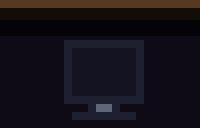
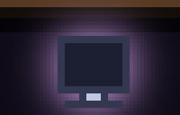
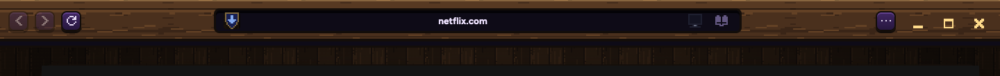
When you want something else, like showing this whole window, it's in Samara's own right-click menu. Choices that can't work on this site are greyed out.
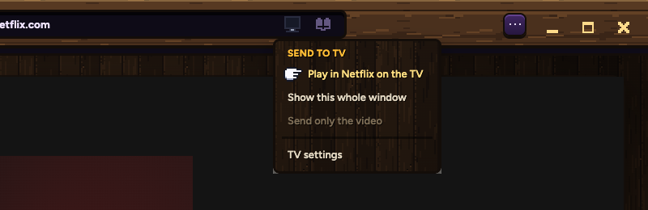
No words, nothing extra in the bar. The TV's screen fills a third at a time, with a bright edge where it has reached. When the show is playing, it lights up fully with its soft glow, like today.
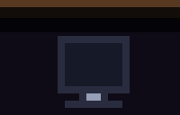
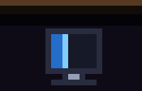
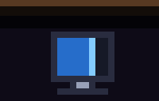
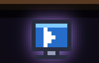
The video here pauses as soon as the TV has it. On YouTube, Samara also answers the TV's "Who's watching?" with your account. Prime has two profiles, so you pick there.
The very first click, the TV shows a code and Samara asks for it, hanging from the TV icon. You type it once. After that it lives in Settings.
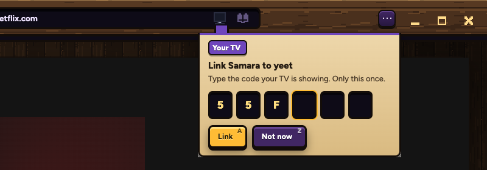
Never silent. It says what happened and offers to show this whole window, which works with the TV asleep. It uses the notices' red for "went wrong".
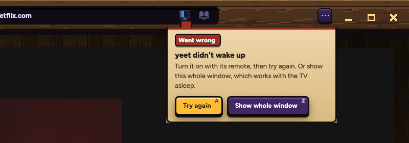
Where the link lives after the first time, in Settings' own game-menu look: your TV, the YouTube answer, pausing here, and unlinking.
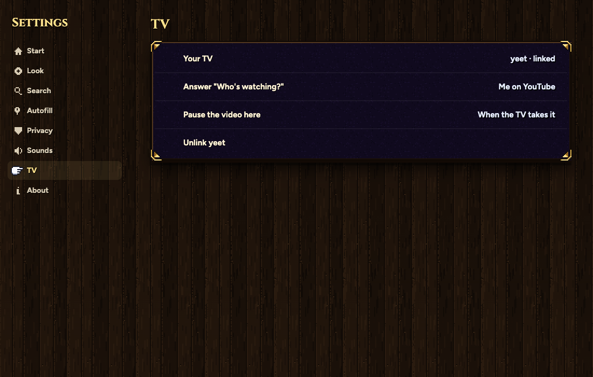
You want videos to arrive paused. YouTube can. Netflix ignores the TV's pause button from outside apps, so Netflix arrives playing.
| YouTube | Plays in the TV's YouTube with your Premium, no ads (tested) |
| Netflix | Plays the show in the TV's Netflix (tested). Can't pick the minute; Netflix resumes on its own |
| Stremio | Opens the show's page in the TV's Stremio (tested) |
| Prime | Opens the Prime app only, so far (fixes to test) |
| Other sites | Send only the video, or show this whole window, as today |